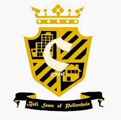

|
POLITEKNIK NEGERI BALITerdepan, Profesional, dan Berdaya Saing Internasional |
| Home | Tentang Kami | Jurusan | Kontak |
|
 Jurusan Teknik Sipil Visi : Menjadi institusi terdepan sebagai penghasil tenaga profesional yang memiliki daya saing internasional di bidang teknik sipil Misi :
Program Studi D3 Teknik Sipil : Konsentrasi Aplikasi Komputer Rancang Bangun, lulusannya akan mengisi kekosongan tenaga kerja jasa konstruksi level menengah atau sebagai praktisi lapangan serta mengisi kesenjangan antara engineer dan teknisi. Di samping ijazah, juga dibekali sertifikat keterampilan dari Badan Sertifikasi Keterampilan Politeknik Negeri Bali yang terakreditasi oleh LPJK Nasional dimana sertifikat ini merupakan salah satu syarat bagi tenaga kerja jasa konstruksi untuk berkiprah pada proyek pemerintah. Program Studi D4 (S1 Terapan) Manajemen Proyek Konstruksi : Menghasilkan lulusan yang kompeten di bidang jasa konstruksi pada level engineer/manager, karena kompetensi yang disiapkan meliputi kemampuan di bidang konstruksi bangunan gedung (rumah tinggal, hotel, villa, pertokoan), jalan raya, bangunan air (irigasi, bendungan, drainase), lapangan terbang, pelabuhan, dll. Oleh karena itu, lulusan program studi ini dapat memasuki dunia industri seperti konsultan perencana, konsultan pengawas, kontraktor, dan PNS di Kimpraswil/PU serta kemampuan berwirausaha sendiri. |
|
| Copyright IanRizky | 2015 |